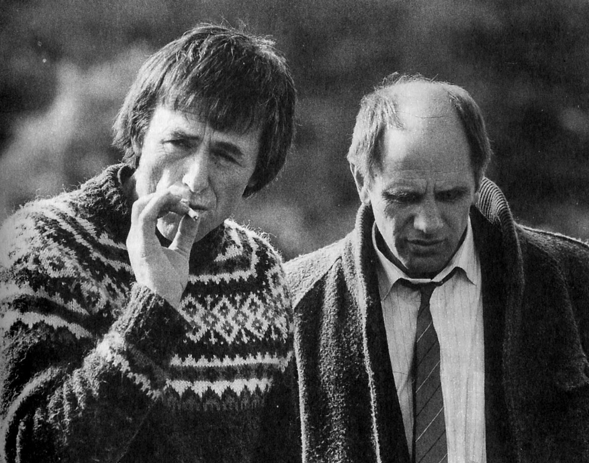
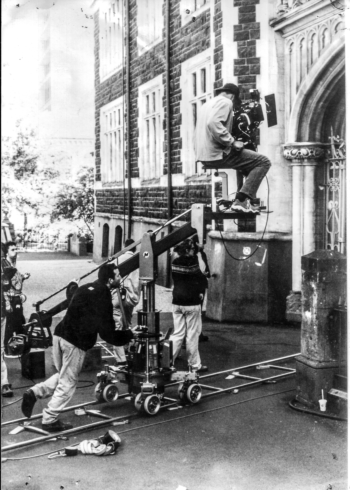

I’ve been around film for as long as I can remember. I grew up in the creative chaos of Blerta, where my father Geoff Murphy and my uncle Bruno Lawrence were key role models who steered me toward a life in film.
What started as helping out on set soon turned into working professionally on films like Goodbye Pork Pie, Carry Me Back, and UTU. By the late ’80s I’d established myself as a key grip for feature films and television, working on large-scale productions including The Lord of the Rings and King Kong.
In 2000 I wrote and directed the short film SOX, which opened the door to directing on Cloud 9’s children’s TV drama The Tribe. That led to a four‑year run directing the reality series Sensing Murder — one of New Zealand’s highest‑rating shows at the time.
In 2007 I dove into directing and producing my first feature, Second‑Hand Wedding. With a privately raised budget of 200k and an experienced, enthusiastic cast and crew, we created a New Zealand box‑office hit. The film brought in almost 2 million, played in cinemas for 17 weeks, and reached the 7th spot in NZ box office records. It screened at numerous festivals and was in competition at the Shanghai International Film Festival and Heartland Film Festival. At the 2008 Qantas NZ Film and Television Awards, we won Best Female in a Leading Role and Best Female in a Supporting Role.
I followed this with the romantic comedy Love Birds, filmed in 2010 and released in 2011, starring Rhys Darby and Sally Hawkins. Despite a national disaster affecting ticket sales at the time, it became the 3rd highest‑grossing New Zealand film that year and went on to a successful festival run, winning Best Director of a Foreign Film (Audience Award) at the Golden Rooster and Hundred Flowers Festival in China.
My long history and hands‑on experience across departments gives me a distinct edge. I understand how each role contributes, which lets me focus on what matters most on set.
I’ve been around actors, artists, and musicians my entire life and understand how diverse and complex creative people can be. I pride myself on my ability to connect, communicate, and create a safe environment where they can do their best work.
